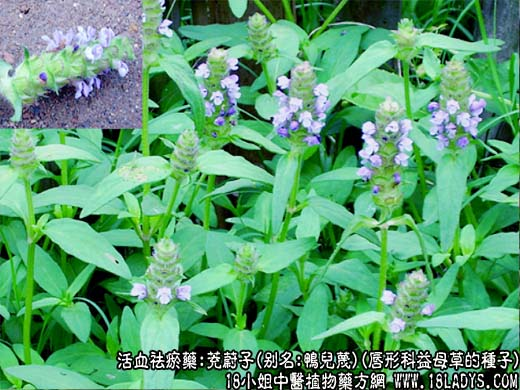
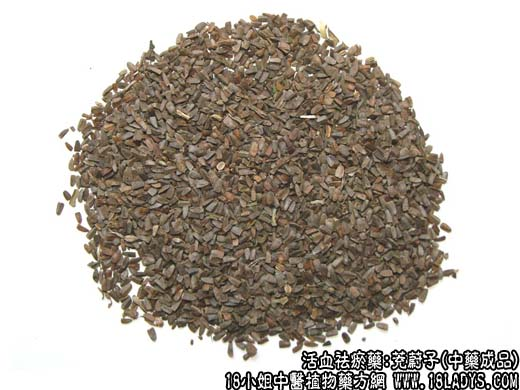

【中药概述】
茺蔚子，别名：鸭儿蔑、益母子、益母草子、小胡麻、冲玉子，为唇形科草本植物益母草的种子。甘、辛，凉。归肝、心包经。
1．活血调经：用于月经不调、经闭、痛经等。可用本品10g，枳壳6g，水煎服。
2．凉肝明目：用于目赤肿痛，眼生翳障等症。
【药物形态】
本品呈三棱形，长2～3mm，宽约1.5mm。表面灰棕色至灰褐色，有深色斑点，一端稍宽，平截状，另一端渐窄而钝尖。果皮薄，子叶类白色，富油性。气微，味苦。
【药效鉴别】茺蔚子行中有补，兼有益精补阴之效。活血又能解热，治瘀热交结。
【药理作用】1.有降压作用。2.对子宫有兴奋作用。
【化学成分】含益母草宁(leonurinine)、亚麻酸、茺蔚子碱及油酸、维生素A等成分。
【用量用法】6——15g，水煎服，或入剂。外用适量。
【使用注意】属肝血不足，瞳孔散大者不宜应用。